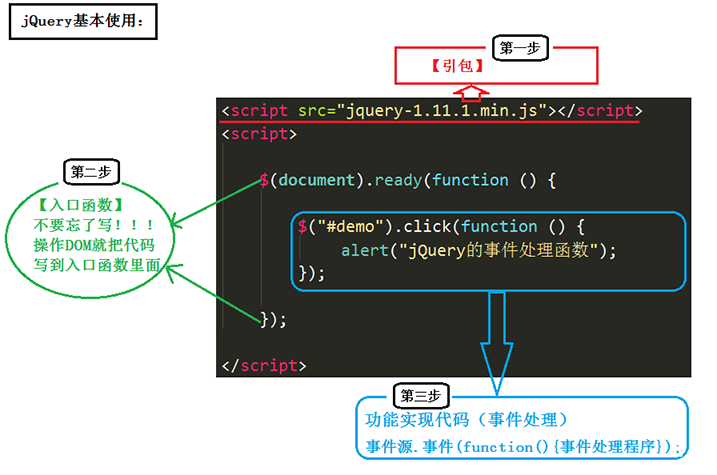
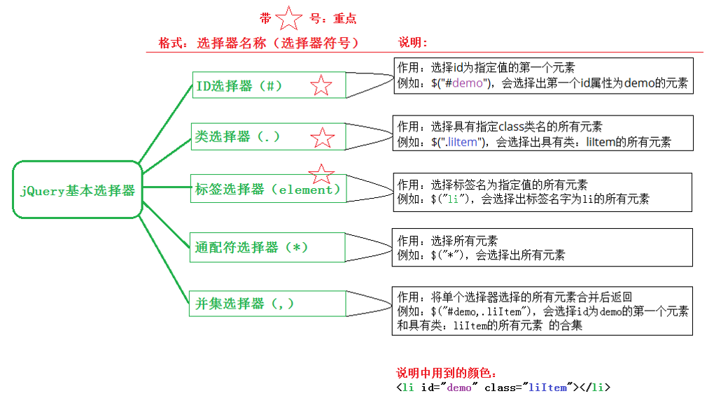
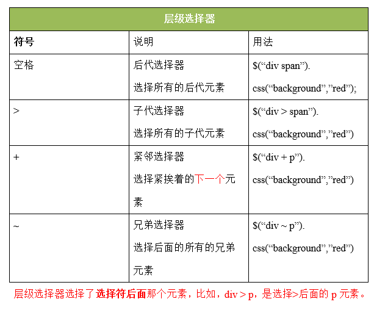
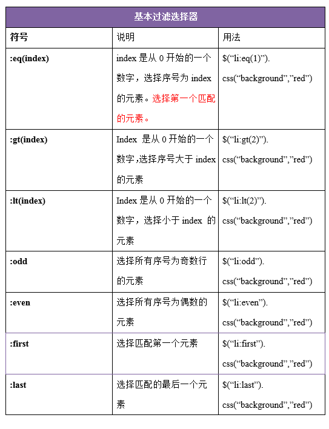
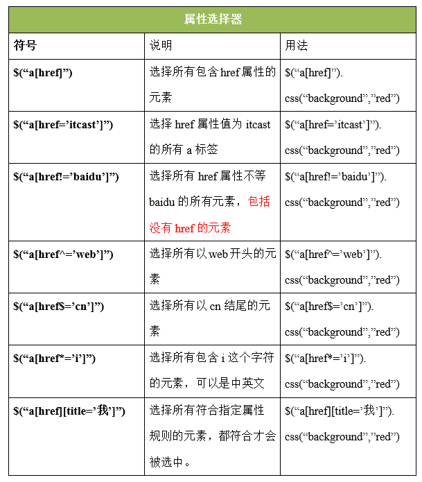
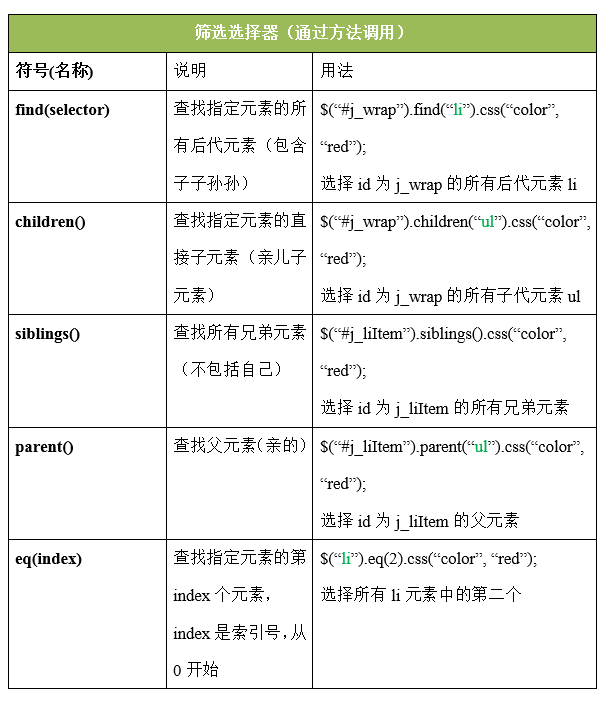
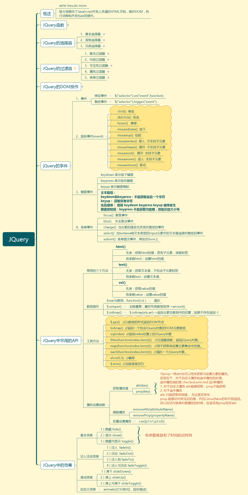

JSON、Ajax和Jquery相关知识总结；
1、JSON
JavaScript对象表示方法（ JavaScript Object Notation ）是一种存储数据的方式。
JSON对象由 名称/值对组成 名称和值之间用冒号:隔开，名称必须用双引号” 包含起来
值可以是任意Javascript数据类型，字符串，布尔，数字 ，数组甚至是对象
不同的名称/值对之间用 逗号 , 隔开
1 | <script> |
JSON格式字符串转为JSON对象：eval("("+str+")");
JSON对象转换为字符串：JSON.stringify(JsonObj);
2、AJAX
通过AJAX (Asynchronous JavaScript And XML) 实现异步刷新
AJAX 最大的优点是在不重新加载整个页面的情况下，可以与服务器交换数据并更新部分网页内容。
AJAX使用步骤：
注：onreadystatechange事件1）创建对象 var xhr = new XMLHttpRequest()
2）配置对象 xhr.open( 参数一，参数二 , 参数三 )
a、参数一：请求方式（GET|POST）
b、参数二：地址（url 文件在服务器上的位置 ）
c、参数三：是否为异步（true|false）—–默认为true
3）发送请求 xhr.send( )
4）监听请求回调
事件 :
(1)xhr.onreadystatechange = function( ){ }
(2)xhr.onload = function( ){ }
(3)xhr.onprogress = function( ){ }
5) 处理响应消息
服务器响应字符串和XML形式的–>responseText/responseXML
| 属性 | 描述 |
|---|---|
| onreadystatechange | 存储函数（或函数名），每当 readyState 属性改变时，就会调用该函数。 |
| readyState | 存有 XMLHttpRequest 的状态。从 0 到 4 发生变化。 0: 请求未初始化 1: 服务器连接已建立 2: 请求已接收 3: 请求处理中 4: 请求已完成，且响应已就绪 |
| status | 200: “OK” 404: 未找到页面 |
AJAX实例：
1 | function getInfo() |
ajax的目标：无刷新加载页面
1）发送请求
2）服务器返回内容有两种：
（a）html页面
（b）数据（在页面内发送的请求服务器当场返回的是数据）（ json ）
在浏览器地址栏输入url按下Enter键后会发生什么？（面试题）
1）域名解析 —–把域名解析成ip地址 （DNS域名解析系统）
2）把ip地址发送到网络供应端，去找相对应的主机服务器
3）TCP的三次握手，简历连接
4）开始发送请求，取回入口文件
5）开始解析入口文件，并取回需要的资源
6）进行后续操作
3、JQuery
JQuery是一个Javascript的框架，是对Javascript的一种封装。
详细知识参考链接：[JQuery笔记详细版]: https://blog.csdn.net/qq_37957971/article/details/82812002
使用JQuery需要导入一个第三方 Javascript库 jquery.min.js (点击下载)
以下是jQuery的相关信息：
- 官网：http://jquery.com/
- 官网API文档：http://api.jquery.com/
- 中文汉化API文档：http://www.css88.com/jqapi-1.9/
JQuery的两大特点：
（1）链式编程：比如.show()和.html()可以连写成.show().html()。
（2）隐式迭代：隐式 对应的是 显式。隐式迭代的意思是：在方法的内部会为匹配到的所有元素进行循环遍历，执行相应的方法；而不用我们再进行循环，简化我们的操作，方便我们调用。
使用JQuery的步骤：

入口函数（重点）
原生JS的入口函数指的是:window.onload = function(){};如下：
1 | //原生 js 的入口函数。页面上所有内容加载完毕，才执行。 |
JQuery的入口函数，写法：
写法一：
1 | //1.文档加载完毕，图片不加载的时候，就可以执行这个函数。 |
写法二：（写法一的简洁版）
1 | //2.文档加载完毕，图片不加载的时候，就可以执行这个函数。 |
写法三：
1 | //3.文档加载完毕，图片也加载完毕的时候，在执行这个函数。 |
js中的DOM对象 和 jQuery对象 比较（重点，难点）
二者的区别
通过 jQuery 获取的元素是一个数组，数组中包含着原生JS中的DOM对象。举例：
针对下面这样一个div结构：
1 | <div></div> |
通过原生 js 获取这些元素节点的方式是：
1 | var myBox = document.getElementById("box"); //通过 id 获取单个元素 |
通过 jQuery 获取这些元素节点的方式是：（获取的都是数组）
1 | //获取的是数组，里面包含着原生 JS 中的DOM对象。 |
两者互相转换：
1、DOM对象转为JQuery对象
1 | $(JS对象) |
2、JQuery对象转为DOM对象
1 | JQuery对象[index]; //方法一，推荐 |
+++
JQuery选择器
1、JQuery基本选择器

1 | <!DOCTYPE html> |
2、层级选择器

1 | <!DOCTYPE html> |
3、基本过滤器

1 | <script src="jquery-1.11.1.js"></script> |
4、属性选择器

5、筛选选择器

实例一：鼠标悬停时，弹出下拉菜单
1 | <!DOCTYPE html> |
可实现两级菜单，水平式布局。
举例三：突出显示
1 | <!DOCTYPE html> |
1 | <!DOCTYPE html> |
JQuery思维导图总结：

xmind文件下载：点击下载
参考博文链接：